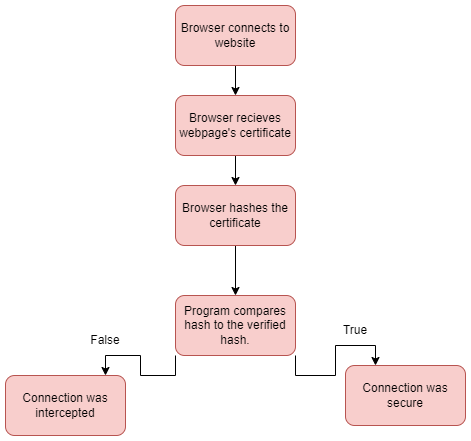

Rupak Bhattacharya
Allen ISD STEAM Center
Advanced Computer Science II
Mr. Ben-Yaakov
August 26, 2022
Fingerprints play a vital role in allowing in tracking and maintaining a sucure connetion with the websites we interact with. They also ensure that the information that we recieve from a website is legitament. A secure connection allows us to have a secure connection with the website and transfer data safer than with the normal HTTP preventing the website from being hacked or having information spied on. HTTPS proxy appliances is a technology that allows the a public institution to view what websites we are visiting and how we are using them. There are some threats to this method however (Gibson 2022). A MITM attack or man in the middle attack is a cyber tack in which communication between two users are intercepted often to capture personal data and paswords (Swinhoe 2022). They could also force you on to a diffrent server or redirct you from your intended server. To alieviate this problem the idea of hashes came about. Hashes are used to validate the authenticity of the users inputs (Gibson 2022). Cryptographic hashs on the other hand have one amazing abillity to change after evan the smallest of changes to the certificate a new hash is generated making them good hashes. They also work in accordance with CAs (Gibson 2022).
A CA is a Certificated to whom the websites must prove their identity in the real world by providing documentation (Gibson 2022). They sign that the website is real putting their reputation on the line in the case the website is a scam. There can also be errors when sending the hashs (Gibson 2022). A false positive error is when something that should be negative is accidently counted as positive accidently showing a web as malicious when it might not be (Gibson 2022). A false negative is when a positive error is given as negative. From a school or goverment stand point I understand their side in monitoring my communications to maintain a level of security; however, as a user I feel entitled to my own privacy away from the prying eyes of school adminastrators and other organizations. These are my opinions on schools viewing our data.
Detailed flowchart about the process
Gibson, S., & CORPORATION, G. R. (n.d.). Grc | SSL tls HTTPS web server certificate fingerprints. Home of Gibson Research Corporation. https://www.grc.com/fingerprints.htm
Swinhoe, D. (2022, March 25). Man-in-the-middle (MITM) attack definition and examples. CSO Online. Retrieved August 24, 2022, from https://www.csoonline.com/article/3340117/man-in-the-middle-attack-definition-and-examples.html